Соотношением называют некоторую взаимосвязь между сущностями нашего мира. Это могут быть числа, физические величины, предметы, продукты, явления, действия и даже люди.
В повседневной жизни, когда речь заходит о соотношениях, мы говорим «соотношения того-то и того-то». Например, если в вазе лежит 4 яблока и 2 груши, то мы говорим «соотношения яблок и груш» или если поменять местами яблоки и груши, то «соотношения груш и яблок».
В математике соотношение чаще употребляется как «отношение того-то к тому-то». Например, соотношение четырёх яблок и двух груш, которые мы рассматривали выше, в математике будет читаться как «отношение четырех яблок к двум грушам» или если поменять местами яблоки и груши, то «отношение двух груш к четырем яблокам».
Соотношение выражается, как a к b (где вместо a и b любые числа), но также можно встретить запись, которая составлена с помощью двоеточия как a : b. Прочитать эту запись можно различными способами:
- a к b
- a относится к b
- отношение a к b
Запишем соотношение четырех яблок и двух груш с помощью символа соотношения:
4 : 2
Это соотношение можно прочитать как «четыре к двум» либо «соотношение четырех яблок и двух груш» либо «четыре яблока относится к двум грушам»
Если же поменяем местами яблоки и груши, то будем иметь соотношение 2 : 4. Это соотношение можно прочитать как «два к четырем» либо «две груши к четырем яблокам» либо «две груши относятся к четырем яблокам».
В дальнейшем соотношение мы будем называть просто отношением.
Содержание урокаЧто такое отношение?
Отношение, как было сказано ранее, записывается в виде a : b. Также его можно записать в виде дроби  . А мы знаем, что такая запись в математике означает деление. Тогда результатом выполнения отношения будет частное чисел a и b.
. А мы знаем, что такая запись в математике означает деление. Тогда результатом выполнения отношения будет частное чисел a и b.
Отношением в математике называют частное двух чисел.
Отношение позволяет узнать сколько количества одной сущности приходится на единицу другой. Вернемся к отношению четырех яблок к двум грушам (4 : 2). Это отношение позволит нам узнать, сколько яблок приходится на единицу груши. Под единицей подразумевается одна груша. Сначала запишем отношение 4 : 2 в виде дроби:
\(\frac{4}{2}\)
Данное отношение представляет собой деление числа 4 на число 2. Если выполнить это деление, мы получим ответ на вопрос сколько яблок приходится на единицу груши
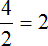
Получили 2. Значит четыре яблока и две груши (4 : 2) соотносятся (взаимосвязаны друг с другом) так, что на одну грушу приходится два яблока
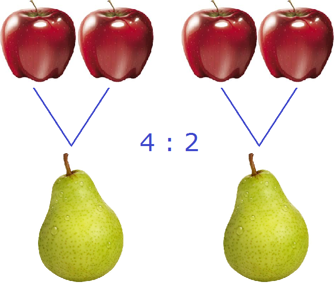
На рисунке показано, как четыре яблока и две груши соотносятся между собой. Видно, что на каждую грушу приходятся два яблока.
Отношение \(\frac{4}{2}\) можно перевернуть, записав как \(\frac{2}{4}\). Тогда у нас получится соотношение двух груш и четырех яблок или «отношение двух груш к четырем яблокам». Это отношение покажет, сколько груш приходится на единицу яблока. Под единицей яблока подразумевается одно яблоко.
Чтобы найти значение дроби \(\frac{2}{4}\) нужно вспомнить, как делить меньшее число на большее

Получили 0,5. Переведём эту десятичную дробь в обыкновенную:
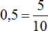
Сократим полученную обыкновенную дробь на 5
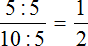
Получили ответ \(\frac{1}{2}\) (половину груши). Значит две груши и четыре яблока (2 : 4) соотносятся (взаимосвязаны друг с другом) так, что на одно яблоко приходится половина груши
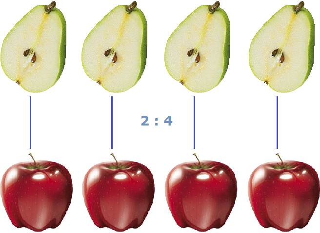
На рисунке показано, как две груши и четыре яблока соотносятся между собой. Видно, что на каждое яблоко приходится половинка груши.
Числа, из которых составлено отношение, называют членами отношения. Например, в отношении 4 : 2 членами являются числа 4 и 2.
Рассмотрим другие примеры соотношений. Для приготовления чего-либо составляется рецепт. Рецепт строят из соотношений между продуктами. Например, для приготовления овсяной каши обычно требуется стакан хлопьев на два стакана молока или воды. Получается соотношение 1 : 2 («один к двум» или «один стакан хлопьев на два стакана молока»).
Преобразуем соотношение 1 : 2 в дробь, получим \(\frac{1}{2}\). Вычислив эту дробь, получим 0,5. Значит один стакан хлопьев и два стакана молока соотносятся (взаимосвязаны друг с другом) так, что на один стакан молока приходится половина стакана хлопьев.
Если перевернуть соотношение 1 : 2 то получится соотношение 2 : 1 («два к одному» или «два стакана молока на один стакан хлопьев»). Преобразуем соотношение 2 : 1 в дробь, получим  . Вычислив эту дробь, получим 2. Значит два стакана молока и один стакан хлопьев соотносятся (взаимосвязаны друг с другом) так, что на один стакан хлопьев приходятся два стакана молока.
. Вычислив эту дробь, получим 2. Значит два стакана молока и один стакан хлопьев соотносятся (взаимосвязаны друг с другом) так, что на один стакан хлопьев приходятся два стакана молока.
Пример 2. В классе 15 школьников. Из них 5 – это мальчики, 10 – девочки. Можно записать соотношение девочек и мальчиков 10 : 5 и преобразовать это соотношение в дробь \(\frac{10}{5}\). Вычислив эту дробь получим 2. То есть девочки и мальчики соотносятся между собой так, что на каждого мальчика приходятся две девочки
На рисунке показано, как десять девочек и пять мальчиков соотносятся между собой. Видно, что на каждого мальчика приходятся две девочки.
Соотношение не всегда можно обращать в дробь и находить частное. В некоторых случаях это будет нелогично.
Так, если перевернуть отношение \(\frac{10}{5}\) получится \(\frac{5}{10}\) , а это уже отношение мальчиков к девочкам. Если вычислить эту дробь получается 0,5. Получается, что пять мальчиков относятся к десяти девочкам так, что на каждую девочку приходится половина мальчика. Математически это конечно верно, но с точки зрения реальности не совсем разумно, ибо мальчик это живой человек и его нельзя просто так взять и разделить, как грушу или яблоко.
Умение построить правильное отношение — важный навык при решении задач. Так в физике, отношение пройденного расстояния ко времени есть скорость движения.
Расстояние обозначается через переменную S, время — через переменную t, скорость — через переменную v. Тогда фраза «отношение пройденного пути ко времени есть скорость движения» будет описываться следующим выражением:
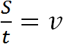
Предположим, что автомобиль проехал 100 километров за 2 часа. Тогда отношение пройденных ста километров к двум часам будет скоростью движения автомобиля:
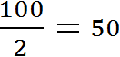
Скоростью принято называть расстояние, пройденное телом за единицу времени. Под единицей времени подразумевается 1 час, 1 минута или 1 секунда. А отношение, как было сказано ранее, позволяет узнать сколько количества одной сущности приходится на единицу другой. В нашем примере отношение ста километров к двум часам показывает сколько километров приходится на один час движения. Видим, что на каждый час движения приходятся 50 километров
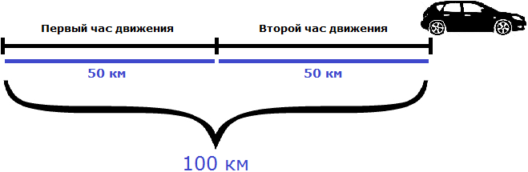
Поэтому скорость измеряется в км/ч, м/мин, м/с. Символ дроби ( / ) указывает на отношение расстояния ко времени: километров в час, метров в минуту и метров в секунду соответственно.
Пример 2. Отношение стоимости товара к его количеству есть цена одной единицы товара
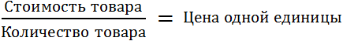
Если мы взяли в магазине 5 шоколадных батончиков и их общая стоимость составила 100 рублей, то мы можем определить цену одного батончика. Для этого нужно найти отношение ста рублей к количеству батончиков. Тогда получим, что на один батончик приходятся 20 рублей
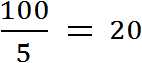
Сравнение величин
Ранее мы узнали, что отношение между величинами разной природы образуют новую величину. Так, отношение пройденного расстояния ко времени есть скорость движения. Отношение стоимости товара к его количеству есть цена одной единицы товара.
Но отношение можно использовать и для сравнения величин. Результат выполнения такого отношения есть число, показывающее во сколько раз первая величина больше второй или какую часть первая величина составляет от второй.
Чтобы узнать во сколько раз первая величина больше второй, в числитель отношения нужно записать большую величину, а в знаменатель меньшую величину.
Чтобы узнать какую часть первая величина составляет от второй, в числитель отношения нужно записать меньшую величину, а в знаменатель большую величину.
Рассмотрим числа 20 и 2. Давайте узнаем во сколько раз число 20 больше числа 2. Для этого находим отношение числа 20 к числу 2. В числителе отношения записываем число 20, а в знаменателе — число 2
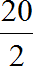
Значение данного отношения равно десяти
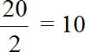
Отношение числа 20 к числу 2 есть число 10. Это число показывает во сколько раз число 20 больше числа 2. Значит число 20 больше числа 2 в десять раз.
Пример 2. В классе 15 школьников. 5 из них это мальчики, 10 – девочки. Определить во сколько раз девочек больше мальчиков.
Записываем отношение девочек к мальчикам. В числителе отношения записываем количество девочек, в знаменатель отношения — количество мальчиков:
\(\frac{10}{5}\)
Значение данного отношения равно 2. Значит в классе из 15 человек девочек в два раза больше мальчиков.
Здесь уже не стоит вопрос о том, сколько девочек приходятся на одного мальчика. В данном случае отношение \(\frac{10}{5}\) используется для сравнения количества девочек с количеством мальчиков.
Пример 3. Какую часть число 2 составляет от числа 20.
Находим отношение числа 2 к числу 20. В числителе отношения записываем число 2, а в знаменателе — число 20
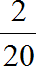
Чтобы найти значение данного отношения, нужно вспомнить, как делить меньшее число на большее
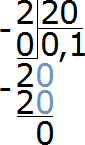
Значение отношения числа 2 к числу 20 есть число 0,1
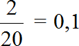
В данном случае десятичную дробь 0,1 можно перевести в обыкновенную. Такой ответ будет проще для восприятия:
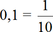
Значит число 2 от числа 20 составляет одну десятую часть.
Можно сделать проверку. Для этого найдём \(\frac{1}{10}\) от числа 20. Если мы всё сделали правильно, то должны получить число 2
\[20 : 10 = 2\]
\[2 \times 1 = 2\]
Получили число 2. Значит одна десятая часть от числа 20 есть число 2. Отсюда делаем вывод, что задача решена верно.
Пример 4. В классе 15 человек. 5 из них это мальчики, 10 – девочки. Определить какую часть от общего количества школьников составляют мальчики.
Записываем отношение мальчиков к общему количеству школьников. В числителе отношения записываем пять мальчиков, в знаменателе — общее количество школьников. Общее количество школьников это 5 мальчиков плюс 10 девочек, поэтому в знаменателе отношения записываем число 15
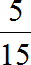
Чтобы найти значение данного отношения, нужно вспомнить, как делить меньшее число на большее. В данном случае число 5 нужно разделить на число 15
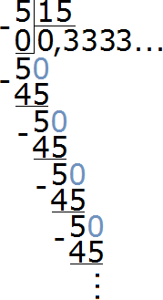
При делении 5 на 15 получается периодическая дробь. Переведём эту дробь в обыкновенную
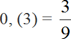
Сократим полученную дробь на 3
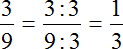
Получили окончательный ответ \(\frac{1}{3}\). Значит мальчики составляют одну треть от всего класса
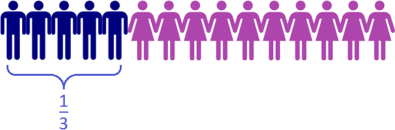
На рисунке видно, что в классе из 15 школьников треть класса составляют 5 мальчиков.
Если для проверки найти \(\frac{1}{3}\) от 15 школьников, то мы получим 5 мальчиков
\[15 : 3 = 5\]
\[5 \times 1 = 5\]
Пример 5. Во сколько раз число 35 больше числа 5 ?
Записываем отношение числа 35 к числу 5. В числитель отношения нужно записать число 35, в знаменатель — число 5, но не наоборот
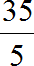
Значение данного отношения равно 7. Значит число 35 в семь раз больше числа 5.
Пример 6. В классе 15 человек. 5 из них это мальчики, 10 – девочки. Определить какую часть от общего количества составляют девочки.
Записываем отношение девочек к общему количеству школьников. В числителе отношения записываем десять девочек, в знаменателе — общее количество школьников. Общее количество школьников это 5 мальчиков плюс 10 девочек, поэтому в знаменателе отношения записываем число 15
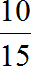
Чтобы найти значение данного отношения, нужно вспомнить, как делить меньшее число на большее. В данном случае, число 10 нужно разделить на число 15
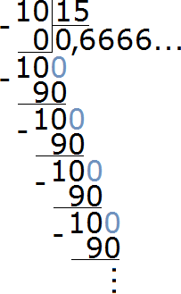
При делении 10 на 15 получается периодическая дробь. Переведём эту дробь в обыкновенную
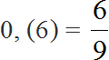
Сократим полученную дробь на 3
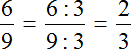
Получили окончательный ответ \(\frac{2}{3}\). Значит девочки составляют две трети от всего класса
На рисунке видно, что в классе из 15 школьников две трети класса составляют 10 девочек.
Если для проверки найти \(\frac{2}{3}\) от 15 школьников, то получим 10 девочек
\[15 : 3 = 5\]
\[5 \times 2 = 10\]
Пример 7. Какую часть 10 см составляют от 25 см
Записываем отношение десяти сантиметров к двадцати пяти сантиметрам. В числителе отношения записываем 10 см, в знаменателе — 25 см
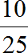
Чтобы найти значение данного отношения, нужно вспомнить, как делить меньшее число на большее. В данном случае число 10 нужно разделить на число 25
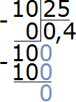
Переведём полученную десятичную дробь в обыкновенную
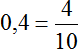
Сократим полученную дробь на 2
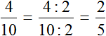
Получили окончательный ответ \(\frac{2}{5}\). Значит 10 см составляют \(\frac{2}{5}\) от 25 см.
Пример 8. Во сколько раз 25 см больше 10 см
Записываем отношение двадцати пяти сантиметров к десяти сантиметрам. В числителе отношения записываем 25 см, в знаменателе — 10 см
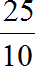
Найдём значение данного отношения
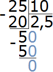
Получили ответ 2,5. Значит 25 см больше 10 см в 2,5 раза (в два с половиной раза)
Важное замечание. При нахождении отношения одноименных физических величин эти величины обязательно должны быть выражены в одной единице измерения, в противном случае ответ будет неверным.
Например, если мы имеем дело с двумя длинами и хотим узнать во сколько раз первая длина больше второй или какую часть первая длина составляет от второй, то обе длины сначала нужно выразить в одной единице измерения.
Пример 9. Во сколько раз 150 см больше 1 метра?
Сначала сделаем так, чтобы обе длины были выражены в одной единице измерения. Для этого переведем 1 метр в сантиметры. Один метр это сто сантиметров
1 м = 100 см
Теперь находим отношение ста пятидесяти сантиметров к ста сантиметрам. В числителе отношения записываем 150 сантиметров, в знаменателе — 100 сантиметров
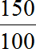
Найдём значение данного отношения
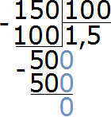
Получили ответ 1,5. Значит 150 см больше 100 см в 1,5 раза (в полтора раза).
А если бы не стали переводить метры в сантиметры и сразу попытались найти отношение 150 см к одному метру, то у нас получилось бы следующее:
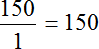
Получилось бы, что 150 см больше одного метра в сто пятьдесят раз, а это неверно. Поэтому обязательно нужно обращать внимание на единицы измерения физических величин, которые участвуют в отношении. Если эти величины выражены в разных единицах измерения, то для нахождения отношения этих величин, нужно перейти к одной единице измерения.
Пример 10. В прошлом месяце зарплата человека составляла 25000 рублей, а в текущем месяце зарплата выросла до 27000 рублей. Определить во сколько раз выросла зарплата
Записываем отношение двадцати семи тысяч к двадцати пяти тысячам. В числителе отношения записываем 27000, в знаменателе — 25000
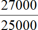
Найдём значение данного отношения
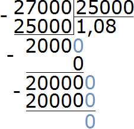
Получили ответ 1,08. Значит зарплата выросла в 1,08 раза. В будущем, когда мы познакомимся с процентами, такие показатели как зарплата будем выражать в процентах.
Пример 11. Ширина многоквартирного дома 80 метров, а высота 16 метров. Во сколько раз ширина дома больше его высоты?
Записываем отношение ширины дома к его высоте:
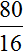
Значение данного отношения равно 5. Значит ширина дома в пять раз больше его высоты.
Свойство отношения
Отношение не изменится если его члены умножить или разделить на одно и тоже число.
Это одно из важнейших свойств отношения следует из свойства частного. Мы знаем, что если делимое и делитель умножить или разделить на одно и то же число, то частное не изменится. А поскольку отношение является ничем иным как делением, то свойство частного работает и для него.
Вернемся к отношению девочек к мальчикам (10 : 5). Данное отношение показало, что на каждого мальчика приходится две девочки. Проверим, как работает свойство отношения, а именно попробуем умножить или разделить его члены на одно и то же число.
В нашем примере удобнее разделить члены отношения \(\frac{10}{5}\) на их наибольший общий делитель (НОД).
НОД членов 10 и 5 это число 5. Поэтому можно разделить члены отношения \(\frac{10}{5}\) на число 5
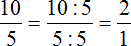
Получили новое отношение  . Это есть отношение два к одному (2:1). Данное отношение, как и прошлое отношение 10:5 показывает, что на одного мальчика приходятся две девочки.
. Это есть отношение два к одному (2:1). Данное отношение, как и прошлое отношение 10:5 показывает, что на одного мальчика приходятся две девочки.
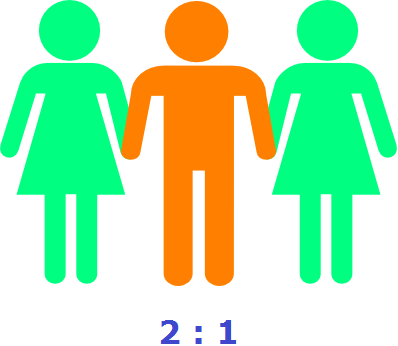
На рисунке показано отношение 2 : 1 (два к одному). Как и в прошлом отношении 10 : 5 на одного мальчика приходятся две девочки. Другими словами, отношение не изменилось.
Пример 2. В одном классе 10 девочек и 5 мальчиков. В другом классе 20 девочек и 10 мальчиков. Во сколько раз в первом классе девочек больше мальчиков? Во сколько раз во втором классе девочек больше мальчиков?
В обоих классах девочек в два раза больше мальчиков, поскольку отношения
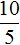
и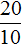
равны одному и тому же числу.Свойство отношения позволяет строить различные модели, которые имеют схожие параметры с реальным объектом. Предположим, что многоквартирный дом имеет ширину 30 метров и высоту 10 метров.
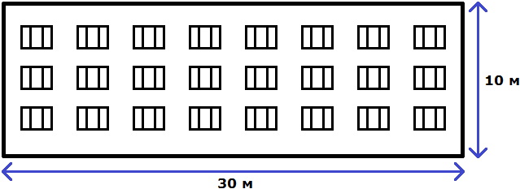
Чтобы нарисовать на бумаге похожий дом, нужно рисовать его в таком же отношении 30 : 10.
Разделим оба члена этого отношения на число 10. Тогда получим отношение 3 : 1. Это отношение равно 3, как и предыдущее отношение равно 3
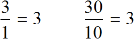
Переведем метры в сантиметры. 3 метра это 300 сантиметров, а 1 метр это 100 сантиметров
3 м = 300 см
1 м = 100 см
Имеем отношение 300 см : 100 см. Разделим члены этого отношения на 100. Получим отношение 3 см : 1 см. Теперь можно нарисовать дом с шириной 3 см и высотой 1 см
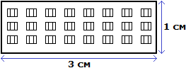
Конечно нарисованный дом намного меньше реального дома, но неизменным осталось отношение ширины и высоты. Это позволило нам нарисовать дом, максимально похожий на реальный
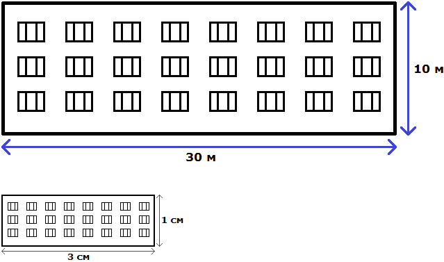
Отношение можно понимать и другим образом. Изначально было сказано, что у реального дома ширина составляет 30 метров, а высота 10 метров. Итого получается 30+10, то есть 40 метров.
Эти 40 метров можно понимать, как 40 частей. Отношение 30 : 10 говорит о том, что 30 частей приходится на ширину, а 10 частей на высоту.
Далее члены отношения 30 : 10 были разделены на 10. В результате получилось отношение 3 : 1. Это отношение можно понимать, как 4 части, три из которых приходится на ширину, одна — на высоту. В этом случае обычно требуется узнать сколько конкретно метров приходится на ширину и высоту.
Другими словами, нужно узнать сколько метров приходится на 3 части и сколько метров приходится на 1 часть. Сначала надо узнать сколько метров приходится на одну часть. Для этого общие 40 метров нужно разделить на 4, поскольку в отношении 3 : 1 всего четыре части
40 м : 4 = 10 м
Далее с помощью умножения определяют сколько метров приходятся на ширину и высоту. Члены, которые даны в отношении используют в качестве сомножителя.
Определим сколько метров приходится на ширину:
10 м × 3 = 30 м
Определим сколько метров приходится на высоту:
10 м × 1 = 10 м
Несколько членов отношения
Если в отношении дано несколько членов, то их можно понимать как части от чего-либо.
Пример 1. Куплено 18 яблок. Эти яблоки разделили между мамой, папой и дочкой в отношении 2 : 1 : 3. Сколько яблок получил каждый?
Отношение 2 : 1 : 3 говорит о том, что мама получила 2 части, папа — 1 часть, дочка — 3 части. Другими словами, каждый член отношения 2 : 1 : 3 это определенная часть от 18 яблок:
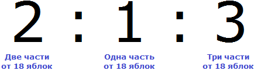
Если сложить члены отношения 2 : 1 : 3, то можно узнать сколько всего частей имеется:
2 + 1 + 3 = 6 (частей)
Узнаем сколько яблок приходится на одну часть. Для этого 18 яблок разделим на 6
18 : 6 = 3 (яблока на одну часть)
Теперь определим сколько яблок получил каждый. Умножая три яблока на каждый член отношения 2 : 1 : 3, можно определить сколько яблок получила мама, сколько получил папа и сколько получила дочка.
Узнаем сколько яблок получила мама:
3 × 2 = 6 (яблок)
Узнаем сколько яблок получил папа:
3 × 1 = 3 (яблока)
Узнаем сколько яблок получила дочка:
3 × 3 = 9 (яблок)
Пример 2. Новое серебро (альпака) — это сплав никеля, цинка и меди в отношении 3 : 4 : 13. Сколько килограммов каждого металла нужно взять, чтобы получить 4 кг нового серебра?
4 килограмма нового серебра будет содержать 3 части никеля, 4 части цинка и 13 частей меди. Сначала узнаем сколько всего частей будет в четырех килограммах серебра:
3 + 4 + 13 = 20 (частей)
Определим сколько килограммов будет приходиться на одну часть:
4 кг : 20 = 0,2 кг
Определим сколько килограммов никеля будет содержáться в 4 кг нового серебра. В отношении 3 : 4 : 13 указано, что три части сплава содержат никель. Поэтому умножаем 0,2 на 3:
0,2 кг × 3 = 0,6 кг никеля
Теперь определим сколько килограммов цинка будет содержáться в 4 кг нового серебра. В отношении 3 : 4 : 13 указано, что четыре части сплава содержат цинк. Поэтому умножаем 0,2 на 4:
0,2 кг × 4 = 0,8 кг цинка
Теперь определим сколько килограммов меди будет содержáться в 4 кг нового серебра. В отношении 3 : 4 : 13 указано, что тринадцать частей сплава содержат медь. Поэтому умножаем 0,2 на 13:
0,2 кг × 13 = 2,6 кг меди
Значит, чтобы получить 4 кг нового серебра, нужно взять 0,6 кг никеля, 0,8 кг цинка и 2,6 кг меди.
Пример 3. Латунь — это сплав меди и цинка, массы которых относятся как 3 : 2. Для изготовления куска латуни требуется 120 г меди. Сколько требуется цинка для изготовления этого куска латуни?
Определим сколько граммов сплава приходится на одну часть. В условии сказано, что для изготовления куска латуни требуется 120 г меди. Также сказано, что три части сплава содержат медь. Если разделить 120 на 3, мы узнаем сколько граммов сплава приходится на одну часть:
120 : 3 = 40 граммов на одну часть
Теперь определим сколько требуется цинка для изготовления куска латуни. Для этого 40 граммов умножим на 2, поскольку в отношении 3 : 2 указано, что две части содержат цинк:
40 г × 2 = 80 граммов цинка
Пример 4. Взяли два сплава золота и серебра. В одном количество этих металлов находится в отношении 1 : 9, а в другом 2 : 3. Сколько нужно взять каждого сплава, чтобы получить 15 кг нового сплава, в котором золото и серебро относилось бы как 1 : 4?
Решение
15 кг нового сплава должны состоять в отношении 1 : 4. Это отношение говорит о том, что на одну часть сплава будет приходиться золото, а на четыре части будет приходиться серебро. Всего же частей пять. Схематически это можно представить следующим образом
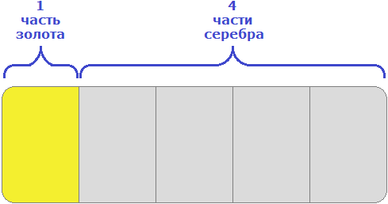
Определим массу одной части. Для этого сначала сложим все части (1 и 4), затем массу сплава разделим на количество этих частей
1 + 4 = 5
15 кг : 5 = 3 кг
Одна часть сплава будет иметь массу 3 кг. Тогда в 15 кг нового сплава будет содержáться 3 × 1 = 3 кг золота и серебра 3 × 4 = 12 кг серебра.
Поэтому для получения сплава массой 15 кг нам нужно 3 кг золота и 12 кг серебра.
Теперь ответим на вопрос задачи — «Сколько нужно взять каждого сплава?»
Первого сплава мы возьмем 10 кг, поскольку золото и серебро в нём находятся в отношении 1 : 9. То есть этот первый сплав даст нам 1 кг золота и 9 кг серебра.
Второго сплава мы возьмем 5 кг, поскольку золото и серебро находятся в нём в отношении 2 : 3. То есть этот второй сплав даст нам 2 кг золота и 3 кг серебра.
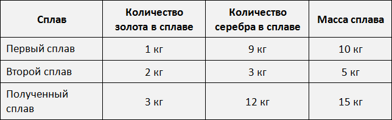